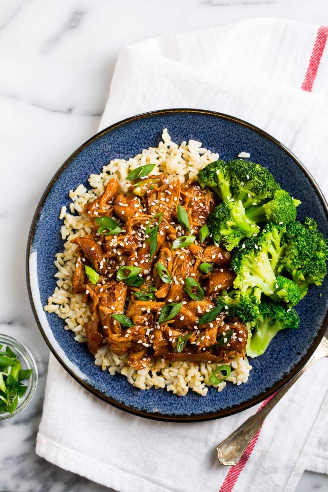

Honey Sesame Chicken

Description
This delicious take on a popular asian dish is simple and easy to make
with the help of your slow cooker. This will be an easy dish to add to
your recipe book when you don't have the time to stand over a stove
for hours.
Ingredients
- 2 lbs Chicken Breast
- 1/2 cup Honey
- 1/2 cup Ketchup
- 1 cup Soy Sauce
- 1 tbsp Hoison Sauce
- 1 1/3 tbsp Sesame Oil
- 1/2 Yellow Onion
- 4 Cloves of Garlic
- 1/2 tbsp Fresh Grated Ginger
- 1 tbsp Garlic Powder
- 1 tbsp Sesame Seeds
- Salt and Pepper to taste
Steps
- In a small skillet sautee onion and garlic in a tbsp of oil until aromatic (about 3 minutes).
- Put sauteed onion and garlic in your slow cooker along with the Honey, Ketchup, Hoison sauce, remaining Sesame Oil and Soy sauce. Whisk until mixed well.
- Add freshly grated ginger, garlic powder, salt, and pepper to crockpot and stir.
- Add Chicken to crockpot and cook on low for 6-7 hours or high for 3-4.
- Remove Chicken and shred. Return to crockpot and continue cooking on low for 1 hour.
- After an hour or so sprinkle sesame seeds on top and serve over rice.